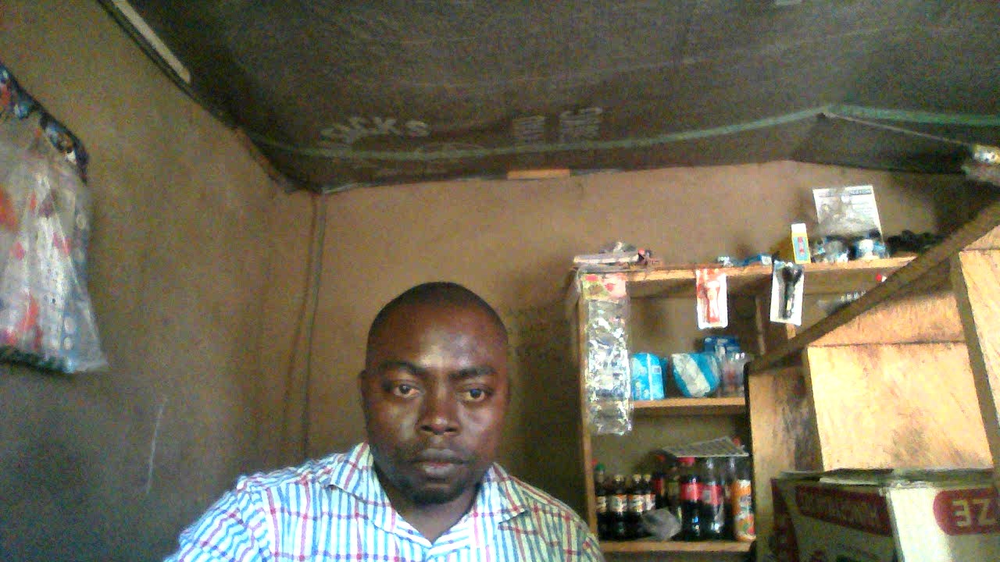
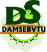
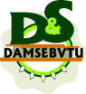

Introduction
As a Lecturer II at Harry Pass Polytechnic, Mkar-Gboko, I am privileged to contribute to the academic and personal growth of students in the field of computer science. My role goes beyond teaching; it is about inspiring, mentoring, and preparing students for the digital future.
About Harry Pass Polytechnic
Harry Pass Polytechnic, Mkar-Gboko, is a forward-thinking institution dedicated to providing quality technical and professional education in Nigeria. The school is committed to nurturing innovation, practical skills, and academic excellence among its students.
Visit the official website: harrypasspolytechnic.edu.ng
Courses Offered
Harry Pass Polytechnic offers a wide range of National Diploma (ND) and Higher National Diploma (HND) programs designed to equip students with relevant skills for today's job market. Some of the popular courses include:
- ND & HND Computer Science
- ND & HND Computer Engineering Technology
- ND & HND Electrical/Electronic Engineering Technology
- ND & HND Accountancy
- ND & HND Business Administration & Management (BAM)
- ND & HND Science Laboratory Technology (SLT)
- ND & HND Public Administration
- ND & HND Legal Studies
If you are seeking a dynamic and supportive environment to advance your education and career, Harry Pass Polytechnic is an excellent choice. Explore the programs and join a community focused on innovation and success!
My Roles and Contributions
- Lecturer II
- Acting HOD, Computer Science (from 2022 till date)
- Acting HOD, Computer Engineering Technology (from 2021 - 2022)
- Examination Officer, Computer Science (from 2020 - 2022)
- Patron, Nigeria Fellowship of Evangelical Students (NIFES, from 2020 till date)
- Member Academic Board (from 2021 till date)
- Secretary, Committee on the Examination Conduct and Administration (from 2022 2024)
Teaching Philosophy
I believe in a student-centered approach to education, where learning is interactive, practical, and relevant. My classes combine theoretical foundations with hands-on projects, encouraging students to think critically and solve real-world problems.
Courses and Subjects
- Introduction to Computer Science
- Programming Fundamentals (e.g., Python, Java, C++)
- Web Development
- Database Management
- Digital Entrepreneurship
Contributions and Achievements
- Developed digital learning materials and online resources for students
- Organized workshops and seminars on emerging technologies
- Mentored students on academic projects and career development
- Promoted the use of technology in teaching and learning
Impact and Vision
My goal is to empower students with the skills and mindset needed to succeed in the digital age. I am committed to fostering a culture of innovation, collaboration, and lifelong learning at Harry Pass Polytechnic and beyond.
Campus Life and Community
Being part of the Harry Pass Polytechnic community has enriched my professional and personal life. I enjoy engaging with colleagues, participating in campus events, and supporting initiatives that promote student success.
Gallery

 

Conclusion
My journey at Harry Pass Polytechnic, Mkar-Gboko, continues to be rewarding and inspiring. I look forward to making even greater contributions to the institution and to the lives of my students.
For more about my work or to connect, feel free to contact me.